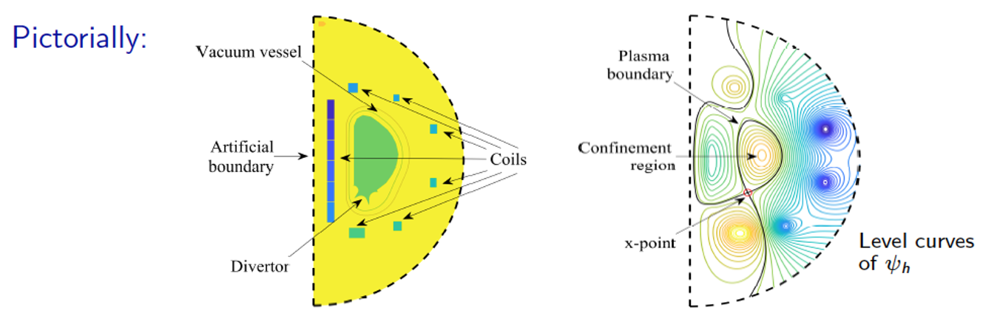

TDS Uncertainty Quantification Efforts
Efficient UQ Algorithms for Plasma Simulations (Preliminary results).
Bryan Reuter (SNL - FASTMATH), Gianluca Geraci (SNL- FASTMATH), Michael Crockatt(SNL), John Shadid (SNL), Tom Smith (SNL), Ari Rappaport (SNL)
SAND2022-3490 W. Approved for public release; distribution is unlimited.
In addressing the modeling and simulation challenges of plasma systems, it is important to account for the fact that uncertainty is endemic to computational simulation of complex multiphysics systems. Numerical simulation of complex multiphysics plasma systems often requires the use of very large-scale computing resources to achieve even marginal accuracy. Thus, we are generally limited to at most O(10 - 50) simulations of the highest fidelity models to approximate the probability distributions propagated through the multiphysics systems and to make predictive inferences. Likewise, experimental, and observational data on complex plasma systems is expensive to obtain, strictly limited in scope and availability, and subject to significant uncertainty and experimental error. Consequently, truly predictive computational analysis and design for these scientific and technology systems requires quantifying the effects of as many sources of uncertainty as feasible. In this study we report on our initial efforts to apply Multifidelity Uncertainty Quantification (MF UQ) to a hierarchy of models and demonstrate the usefulness of a few sampling based MF UQ estimators to improve the precision of statistics for plasma physics problems.
Multifidelity approaches recognize that the number of high-fidelity model evaluations will be limited and seek to use many function evaluations from a predictive low-fidelity model to reduce the number of high-fidelity model evaluations required to compute high-fidelity statistics to a specified precision. In this context the high-fidelity model is, e.g., represented as a sum of the low-fidelity model plus a discrepancy term: QHIGH = QLOW + (QHIGH − QLOW). When the low-fidelity model captures useful trends of the high-fidelity model, then the model discrepancy term, QHIGH − QLOW, may have either lower complexity or lower variance, and thus requiring less computational effort to resolve its functional form than that required for the original high-fidelity model. Briefly, in the context of the plasma physics systems considered above, we will explore employing a hierarchical approach to defining multifidelity models. We will consider the increasing complexity (and thus computational costs) of these models, roughly ranked as (resistive MHD, extended MHD, multifluid / full-Maxwell, full kinetic PIC). In this way the low-fidelity model would be of lower rank (to the left) and the high-fidelity (to the right).
Multilevel Monte Carlo sampling for uncertainty quantification (MLUQ).
Here we briefly present an initial study of applying multilevel Monte Carlo (MLMC) sampling in the context of assessing aspects of UQ for a 2D resistive MHD tearing mode problem. The method begins with an inital exploratory log normal sample of a two-dimensional parameter space. The parameters are the viscosity and the resistivity that are used to compute the governing non-dimensional parameters the Reynolds number and the Lundquist number. The initial exploratory sample computes the tearing mode growth rate in the for a sequence of higher-resolution discretizations. The images below visualize the final single island plasma pressure distribution after the breaking of the thin current sheet. The algorithm uses these initial evaluations, or pilot study, to determine the correlation of the models in the hierarchy for the prediction of the QoIs, and also to assess the relative cost on the models. This study uses various mesh resolutions and constant Alfven wave CFL time steps.

The result of the MLUQ algorithm/analysis is a development of a sequence of computations, on various mesh levels, that significantly reduces the total CPU time expenditure to achieve a desired level of estimated variance reduction.
Multifidelity methods for uncertainty quantification (MFUQ)
Multifidelity uncertainty quantification allows for efficient and accurate propagation of uncertainty in complex, costly multiphysics plasma models needed to study key features of Tokamak fusion. Initial studies of a model of an expanding core of high-density, fully-ionized plasma into a lower-density, fully-ionized background demonstrated that higher prediction accuracy for quantities of interest can be achieved at a fraction of the cost (~1%) of single-fidelity approaches. The initial plasma state is considered uncertain and characterized probabilistically. Cheaper, lower-fidelity models are generated by employing coarse meshes or low-order numerical methods. Since they can capture basic trends and low-order structure of the response of the quantities of interest (kinetic energy, electromagnetic energy, and particle loss) to the uncertain inputs, these lower-fidelity models can be leveraged heavily to reduce the variance of the mean estimators. Briefly, MFMC corresponds to a multifidelity Monte Carlo sampling algorithm, ACV-MF is a approximate control variate for multifidelity, and ACV-IS is an independent samples strategy. A useful reference for these methods is Generalized ACV for multifidelity UQ.

Optimal mean estimators and 99.7% confidence intervals for the QoIs. All MF strategies show significant improvement over a single-fidelity estimator.
Reduced sampling UQ and sensitivities for Grad-Shafranov equation.
Howard Elman (University of Maryland)
The aim of this study is to reduce the computational costs of simulation of a parameter-dependent model of fusion. Using the Grad-Shafranov free boundary problem as an example, for which the solution depends on the intensities of currents going through an array of external coils, we treat the current intensities as stochastic parameters and explore with Monte Carlo simulation how variability of the parameters affects important features of the plasma boundary such as location of the x-point, the strike points, and shaping attributes such as triangularity and elongation. Costs of simulation can be dramatically reduced by replacing the mathematical model, which requires multiple solutions of large nonlinear algebraic system of equations, with a surrogate function built on a sparse grid in parameter space. The use of the surrogate function reduces the time required for the Monte Carlo simulations by factors that range between 7 and over 30. We expect this methodology to be broadly applicable to more complex models.
 Schematic diagram of the problem domain and solution of the forward problem. The scientific issue is the effect of multiple variations of current intensities on output, explored using Monte Carlo simulation. The mathematical issue is the high cost of repeated solution of nonlinear algebraic equations.
 Replace "direct solution" of algebraic system with surrogate approximation using sparse grid collocation (interpolation).
Replace "direct solution" of algebraic system with surrogate approximation using sparse grid collocation (interpolation).


Average CPU times for evaluation of surrogate function and direct solution of the free boundary problem, and cost reductions obtained using surrogates. The details of the algorithmic approach and results can be found in Surrogate approximation of the Grad-Shafranov free boundary problem via stochastic collocation on sparse grids.